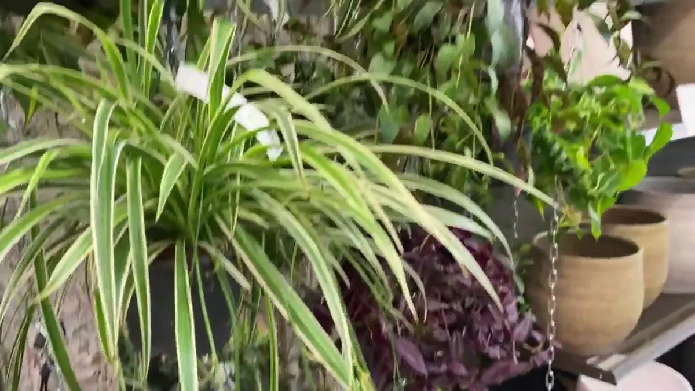

For a lower-light room, consider Aspidistra, ZZ plant, snake plant, heartleaf Philodendron or Pothos. Place them where you can comfortably read during the day without switching on a lamp, keep them closer to the window in winter, and water less often than the same plant in brighter light.

“Low light” is not “no light”
A hallway with no window is not a low-light habitat; it is darkness interrupted by electric light. Distance matters enormously: a plant several metres from a window receives far less light than one beside it, even when the room feels bright to human eyes. Buildings opposite the window, balconies, trees, privacy film and deep window reveals all reduce light further.
Use observation before an app: can you read a printed page there at midday without a lamp? Does the spot receive a view of open sky? For a clearer comparison, use the same light-meter app at several positions and times, treating readings as relative rather than laboratory measurements.
Five sensible candidates
| Plant | Why it works | Watch for |
|---|---|---|
| Cast iron plant (Aspidistra) | Slow, durable foliage; classically tolerant of shade | Do not keep the dense root ball constantly wet |
| ZZ plant (Zamioculcas) | Stores water and tolerates slower growth | Overwatering; give it brighter light for stronger growth |
| Snake plant (Dracaena trifasciata) | Architectural and drought tolerant | Cold, wet compost; variegation may weaken in deep shade |
| Heartleaf Philodendron | Adaptable trailing growth | Long gaps between leaves signal insufficient light |
| Pothos (Epipremnum aureum) | Forgiving and easy to prune | Variegation and growth decline as light falls |
The RHS also lists plants suited to lower indoor light, but “shade-tolerant” describes survival and acceptable growth, not identical performance at every distance from a window.
How care changes in lower light
- Water later: the mix dries more slowly. Check depth and pot weight.
- Feed less: fertiliser cannot replace light and may accumulate when growth is slow.
- Expect slower growth: fewer leaves are not necessarily a care failure.
- Keep leaves clean: dust blocks a share of already limited light.
- Reassess in October: a tolerable summer corner may become too dark in winter.
When a grow light is the honest answer
Use a purpose-made, safely installed grow light when the desired spot lacks useful daylight or when a high-light plant cannot be moved. Put it on a timer for a consistent day length and follow the manufacturer’s distance guidance; intensity drops quickly with distance. A warm-white full-spectrum light can suit a living space better than purple light.